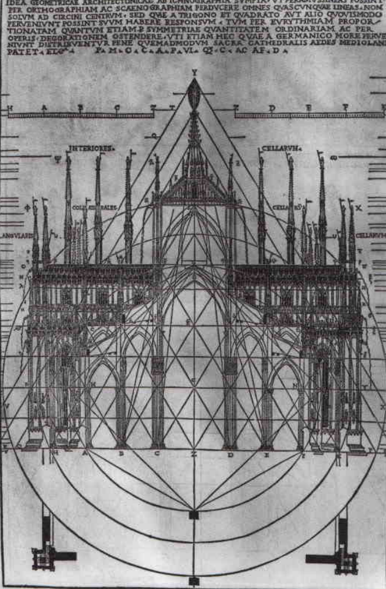

Gian Galeazzo Visconti
Born: October 16, 1351, Pavia Died: September 3, 1402, Melegnano
First duke of Milan (1395), ruling just before the dawn of the Renaissance. He was the founding patron of the Certosa di Pavia, completed the Visconti Castle at Pavia, and furthered work on the Duomo of Milan. Major patron of the arts.
Associated Artworks
Hours of Gian Galeazzo Visconti
- Location: Biblioteca Nazionale, Florence
- By Giovannino dei Grassi

Architectural Patronage
Milan Cathedral
- Location: Milan Cathedral
- Started the construction

Artworks
No artworks documented yet.